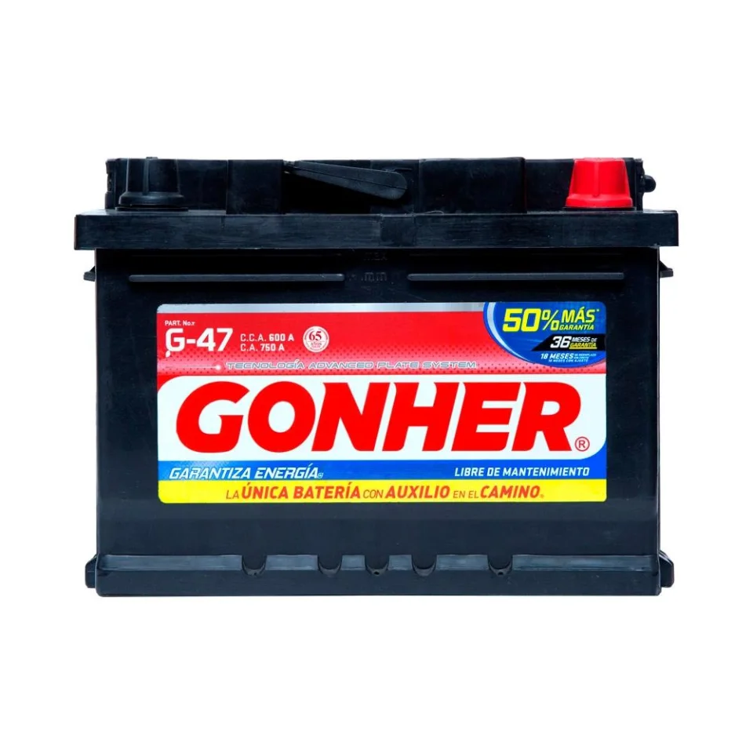
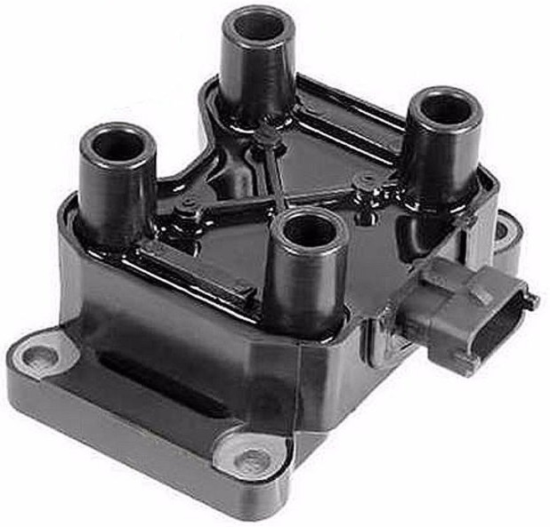
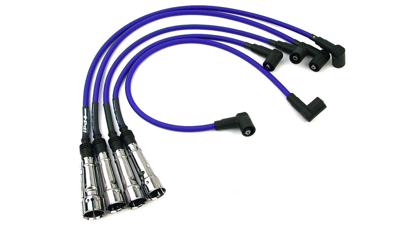
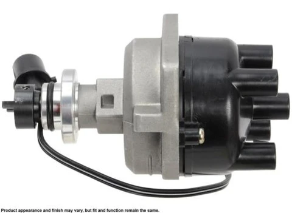

| Imagen |
Descripción / Modelo |
Precio |
|  |
Batería Gonher G-47 para Auto, acumulador de 12v peso de 12 kg, color negro
garantia de 3 a 4 años y 18 meses de remplazo sin costo
|
$3,570.00.- |
 |
duralast de alternador, refabricado, voltaje de 12 volts, peso de 12 kilos,
material acero, dentro del paquete viene un alternador y un manual de instrucciones
color plateado, garantia de 1 año
|
$ 1,870.00.- |
|  |
Duralast Bobina de Encendido, voltaje de 12 volts, peso de 1.5 kilogramos,
piezas disponibles 75 grantia extendida de 1 año
|
$ 2,700.00.- |
 |
pack de bujias color palteado, material acero, garantia sin garantia
piezas disponibles 525 paquetes de bujias |
$ 150.00.- |
|  |
Cables para bujias marca duralast, terminales resistentes, para vehiculos de 8 cilindros
color negro peso de medio kilo.Los juegos de cables de encendido Duralast le permiten completar
la afinación del encendido, sin gastar demasiado. garantia de 6 meses en tienda piezas disponibles
400
|
$ 500.00.- |
|  |
Distribuidores Duralast gold, La ingeniería, tecnología de fabricación y control de calidad innovadores aseguran
que los distribuidores Duralast Gold igualan o exceden el rendimiento del equipo original que reemplazan.
peso de 2 kilos color gris, garantia de 6 meses en tienda piezas disponibles 7
|
$ 4,200.00.- |
 |
Reguladores de Voltaje Duralast Los reguladores de voltaje controlan el voltaje de carga que produce el alternador,
usualmente manteniéndolo entre 13.5 y 14.5 V para proteger los componentes eléctricos del vehículo.
voltaje 12v, garantia de 6 meses con marca, piezas disponibles 80
|
$ 800.00.- |